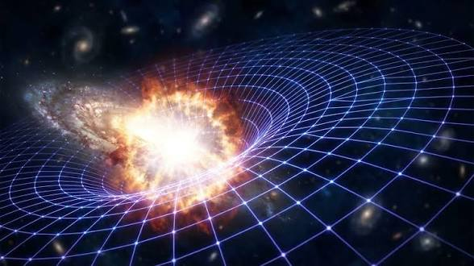
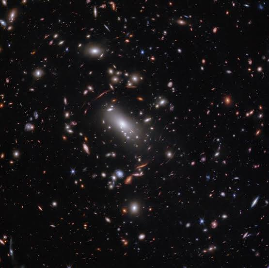
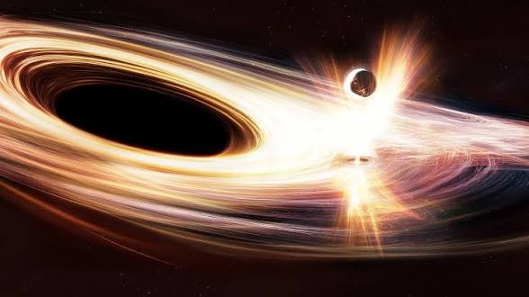
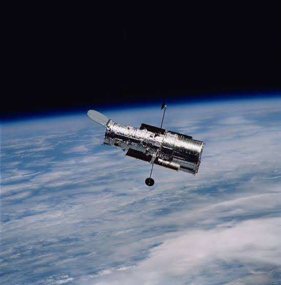
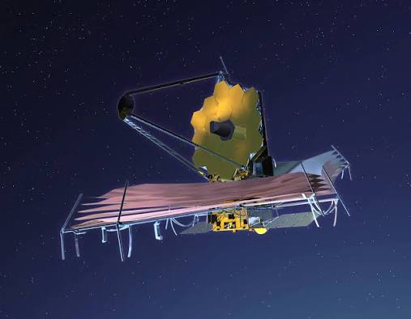

DESCUBRIMIENTOS
1924-Edwin Hubble
Descubrió que la Vía Láctea no es el único universo,
hay millones de galaxias más. Observó la galaxia de Andrómeda.

1929-La Expansión del Universo
Hubble descubrió que las galaxias se están alejando entre sí.
Mientras más lejos, más rápido se alejan.

1933-Materia Oscura
Fritz Zwicky descubrió que las galaxias tienen una materia invisible
que no podemos ver, pero que las mantiene unidas.

1960-Agujeros Negros Supermasivos
Se descubrió que en el centro de casi todas las galaxias hay un agujero
negro gigante.

1990-Telescopio Hubble
Lanzado al espacio, tomó fotos como el Campo Ultra Profundo con 10,000 galaxias
en una sola imagen.

2022-Telescopio James Webb
Descubrió las galaxias más antiguas y lejanas, de hace más de 13,000
millones de años.

2019-Foto de agujero negro
Se tomó la primera foto del agujero negro de la galaxia M87.